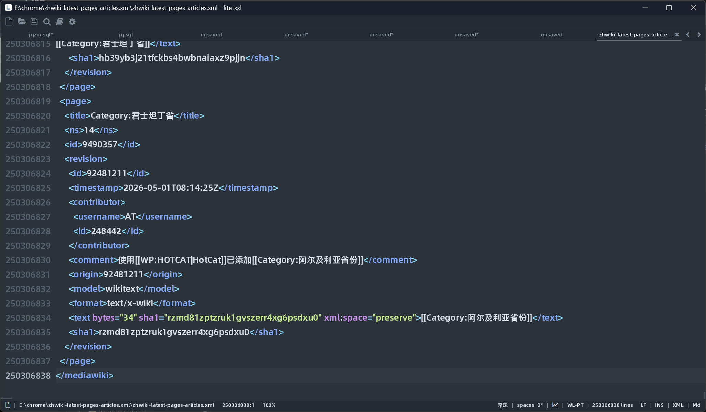

流式内核 + 索引式跳转，专为超大文件设计的编辑器。13.6GB 的维基百科 XML，打开 <1s、随机跳转 <0.5s，系统满载时依旧流畅。

不是"能打开"，是打开、编辑、跳转都像小文件一样轻盈。
只解析和渲染当前可视区域，文件再大也不做全量加载，打开即用。
后台建立行偏移索引，实测任意行随机跳转 <0.5s。
覆盖主流语言与配置文件格式，暗色配色专为长时间阅读代码优化。
编辑区与预览区分栏同步滚动，写文档所见即所得。
去掉一切多余装饰，专注度优先，长时间使用也不刺眼。
打开与跳转耗时不随文件大小线性增长；13.6GB 文件实测内存约 2.1GB（占比约 14%），密集行索引仅 8 字节/行，2500 万行索引约 200MB。
传统编辑器的打开时间随文件大小线性甚至更差地增长，lite-xxl 始终接近于零。
* 趋势示意图，非严格基准测试